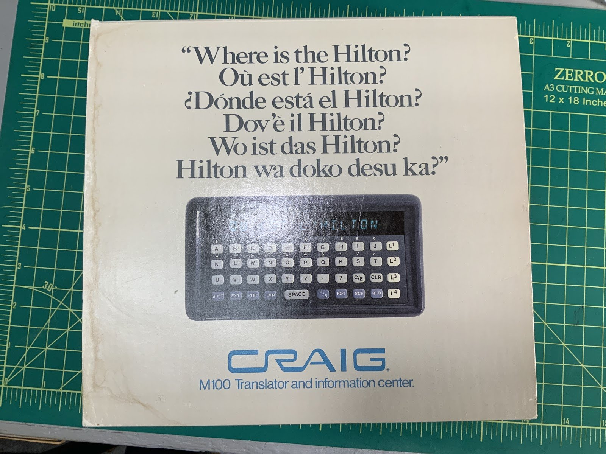
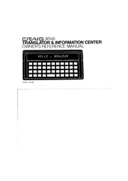

Craig M100 Hand-Held Translator and Information Center
A pocket translator that admitted when it was confused — flashing question marks instead of guessing

Overview
The Craig M100 'Hand-Held Translator and Information Center' was one of the two first pocket electronic translators to reach the American market, arriving in early 1979 at $199.95. It was built for Craig Corporation, a California consumer-electronics firm, by a concern called Friends Ami, and its design is credited to inventor Ron Gordon. The New York Times test-drove it alongside the rival Lexicon LK-3000 in March 1979; the identical hardware was also sold by Friends Ami as the 'ami MEMORY System.'
Physically it is a calculator-sized slab with an alphabetical A-Z keyboard, an LED display, and up to three single-language 'Memory Capsules' installed at once — one each for English, French and German — holding roughly 9,500 words. Because the capsules are single-language rather than language-pair, all installed languages are available simultaneously with no 'mode' switching. Programmed idioms are printed on the back of the unit and recalled with a phrase key; a 'learn' key supports study; a 'hold' key keeps proper names untranslated.
The strange part is the 'search' key. The M100's dictionary model was literal word-for-word substitution, so homographs were a real problem: the machine could not tell a watch (you look at it) from a watch (you wear it). Rather than guessing silently, the device signaled its puzzlement with question marks and handed the choice back to the user — 'WATCH (SEE)' versus 'WATCH (CLOCK)'. The manual documents a related wildcard: a '-?-' entry means the word breaks into two phrases. Explicit uncertainty handling, embodied in a $200 pocket gadget in 1979.
Deep dive
The M100's standout interaction is its 'search' key and the visible question marks. When the dictionary lookup hit an ambiguous word, the device flashed question marks and the user stepped through the alternatives. This is the 1979 version of 'did you mean?' — except the machine does not offer a guess, it asks you to decide. It demonstrates that uncertainty handling was a design question long before speech recognizers and search engines made it a familiar one.
The three swappable Memory Capsules are the hardware brain: slotting a different capsule into the same slab changes its language. Because they are single-language, up to three coexist, so the machine is simultaneously an English-French, English-German, and French-German translator with no modes. Programmed idioms printed on the back cover and recalled with a phrase key treat the printed label on the hardware as part of the interface.
Word-for-word substitution produced wonderfully strange output. The NYT test-drive of the era's translators captured the state of the art: asking how to buy a gift produced literal, oddly-worded translations. The M100's honesty about ambiguity was the counterpoint — when its model could not decide, it said so.
Ralph Blumenthal's New York Times article 'Testing Out Two Pocket Electronic Translators' (March 25, 1979) ran the M100 against the Lexicon LK-3000. The two devices embodied opposite philosophies: the LK-3000 stored word-pairs on modules each carrying its own microprocessor; the M100 stored single-language capsules and made its uncertainty visible on screen.
Team & pioneers
- Ron Gordon. Inventor credited with the Craig M100 design.
- Craig Corporation. California consumer-electronics maker that sold the M100 under the Craig brand.
- Friends Ami. The concern that built the device for Craig; also sold it as the 'ami MEMORY System.'
- Ralph Blumenthal. New York Times reporter whose March 25, 1979 test-drive is the key period source.
Media

Sources
- New York Times — Testing Out Two Pocket Electronic Translators (March 25, 1979)
- Grolier Club — Hardly Harmless Drudgery, item 4479 (Craig M100)
- Handheld Computer Museum — Craig Translator & Information Center M100
- Internet Archive — Craig M100 user manual (1979)
- The Paleotechnologist — hands-on retrospective on the Craig M100
- CALCUSEUM — Craig M100 / ami MEMORY System notes